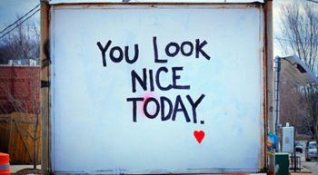

|

Transactional analysis is a psychoanalytic theory and method of therapy wherein social transactions are analyzed to determine the ego state of the patient (whether parent-like, child-like, or adult-like) as a basis for understanding behavior. In transactional analysis, the patient is taught to alter the ego state as a way to solve emotional problems. The method deviates from Freudian psychoanalysis which focuses on increasing awareness of the contents of unconsciously held ideas. Eric Berne developed the concept and paradigm of transactional analysis in the late 1950s.
History overview:
TA is not only post-Freudian, but, according to its founder's wishes, consciously extra-Freudian. That is to say that, while it has its roots in psychoanalysis, since Berne was a psychoanalytically-trained psychiatrist, it was designed as a dissenting branch of psychoanalysis in that it put its emphasis on transactional rather than "psycho-" analysis.
With its focus on transactions, TA shifted the attention from internal psychological dynamics to the dynamics contained in people's interactions. Rather than believing that increasing awareness of the contents of unconsciously held ideas was the therapeutic path, TA concentrated on the content of people's interactions with each other. Changing these interactions was TA's path to solving emotional problems.
TA also differs from Freudian analysis in explaining that an individual's final emotional state is the result of inner dialogue between different parts of the psyche, as opposed to the Freudian hypothesis that imagery is the overriding determinant of inner emotional state. (For example, depression may be due to ongoing critical verbal messages from the inner Parent to the inner Child.) Berne believed that it is relatively easy to identify these inner dialogues and that the ability to do so is parentally suppressed in early childhood.
In addition, Berne believed in making a commitment to "curing" his patients rather than just understanding them. To that end he introduced one of the most important aspects of TA: the contract—an agreement entered into by both client and therapist to pursue specific changes that the client desires.
Revising Freud's concept of the human psyche as composed of the id, ego, and super-ego, Berne postulated in addition three "ego states"—the Parent, Adult, and Child states—which were largely shaped through childhood experiences. These three are all part of Freud's ego; none represent the id or the superego.
Unhealthy childhood experiences can lead to these being pathologically fixated in the Child and Parent ego states, bringing discomfort to an individual and/or others in a variety of forms, including many types of mental illness.
Berne considered how individuals interact with one another, and how the ego states affect each set of transactions. Unproductive or counterproductive transactions were considered to be signs of ego state problems. Analyzing these transactions according to the person's individual developmental history would enable the person to "get better". Berne thought that virtually everyone has something problematic about their ego states and that negative behaviour would not be addressed by "treating" only the problematic individual.
Berne identified a typology of common counterproductive social interactions, identifying these as "games".
Berne presented his theories in two popular books on transactional analysis: Games People Play (1964) and What Do You Say After You Say Hello? (1975). I'm OK, You're OK (1969), written by Berne's long-time friend Thomas Anthony Harris, is probably the most popular TA book.
By the 1970s, because of TA's non-technical and non-threatening jargon and model of the human psyche, many of its terms and concepts were adopted by eclectic therapists as part of their individual approaches to psychotherapy. It also served well as a therapy model for groups of patients, or marital/family counselees, where interpersonal (rather than intrapersonal) disturbances were the focus of treatment.
TA's popularity in the U.S. waned in the 1970s. The more dedicated TA purists banded together in 1964 with Berne to form a research and professional accrediting body, the International Transactional Analysis Association, or ITAA.
|